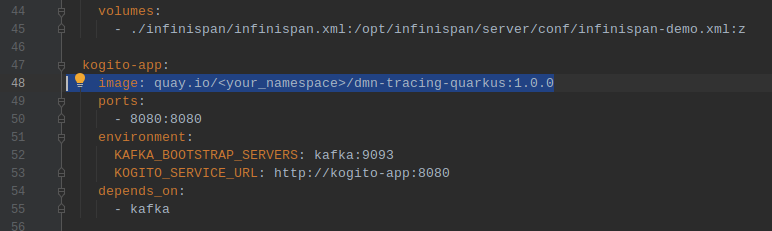
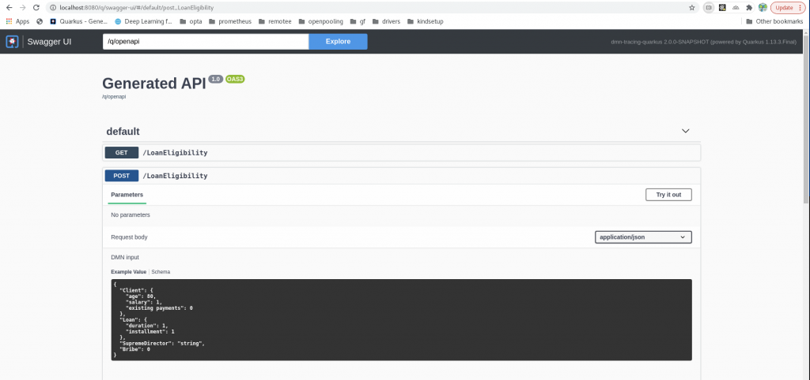
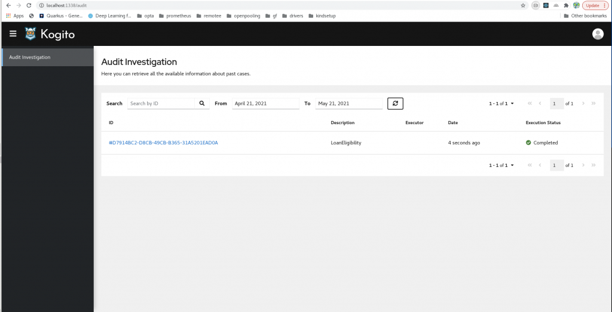
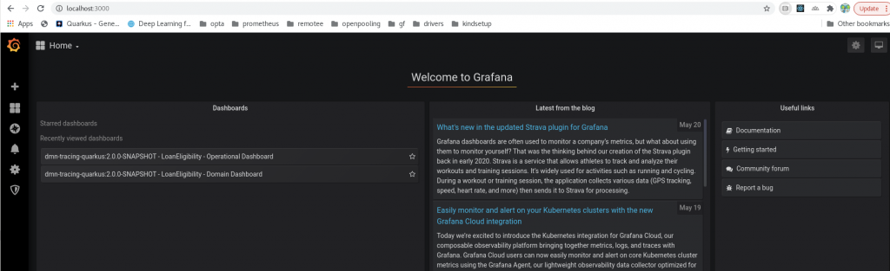

Getting started with TrustyAI in only 15 minutes
Hi Kogito folks,
In the previous blogposts we demonstrated how to deploy a Kogito service together with the TrustyAI infrastructure on an OpenShift cluster https://blog.kie.org/2020/12/how-to-integrate-your-kogito-application-with-trustyai-part-1.html.
If you are new to TrustyAI, we suggest you read this introduction: https://blog.kie.org/2020/06/trusty-ai-introduction.html
In this blogpost, we’d like to demonstrate how to get started with TrustyAI in ~15 minutes. In order to start the demo, you will need the following applications installed on your laptop
git >= 2.27.0docker >= 20.10.3docker-compose >= 1.25.2java >= 11maven >= 3.6.3
Note that also previous versions of the applications might work, but they were not tested.
The first step is to clone our kogito-examples repository (if you haven’t it yet) with
git clone https://github.com/kiegroup/kogito-examples.gitand checkout the stable branch
cd kogito-examples
git checkout stableand build a Kogito decision service with the tracing-addon and the monitoring-addon. For example kogito-examples/kogito-quarkus-examples/dmn-tracing-quarkus is already prepared, so you can compile and package it with
mvn clean package -DskipTests -f dmn-tracing-quarkus/pom.xmland then copy the generated grafana dashboards to the docker-compose directory with
cp dmn-tracing-quarkus/target/classes/META-INF/resources/monitoring/dashboards/* trusty-demonstration/docker-compose/grafana/provisioning/dashboards/and then build the docker image with
docker build -t org.kie.kogito/dmn-tracing-quarkus:1.0 dmn-tracing-quarkus/In this example we tag the image org.kie.kogito/dmn-tracing-quarkus:1.0, but you can use another tag.
The second step is to run the Kogito service together with the TrustyAI infrastructure. In order to do that, change your current directory to kogito-examples/kogito-quarkus-examples/trusty-demontration/docker-compose .
With your preferred editor, edit the file docker-compose.yaml and replace the line 48 with the tag of the docker image you have just created (we used org.kie.kogito/dmn-tracing-quarkus:1.0 for example)

The final step is just about running the docker-compose script with (depending on your setup, you might need to run this command with sudo )
docker-compose upThe services are available at the following endpoints:
- Kogito application:
localhost:8080

AuditUI:localhost:1337

- Grafana:
localhost:3000

You can now open localhost:8080/swagger-ui and execute some POST requests to the LoanEligibility with the following payload
{
"Bribe": 1000,
"Client": {
"age": 43,
"existing payments": 100,
"salary": 1950
},
"Loan": {
"duration": 15,
"installment": 180
},
"SupremeDirector": "Yes"
}You should now see the executions in the AuditUI and the monitoring data in Grafana.